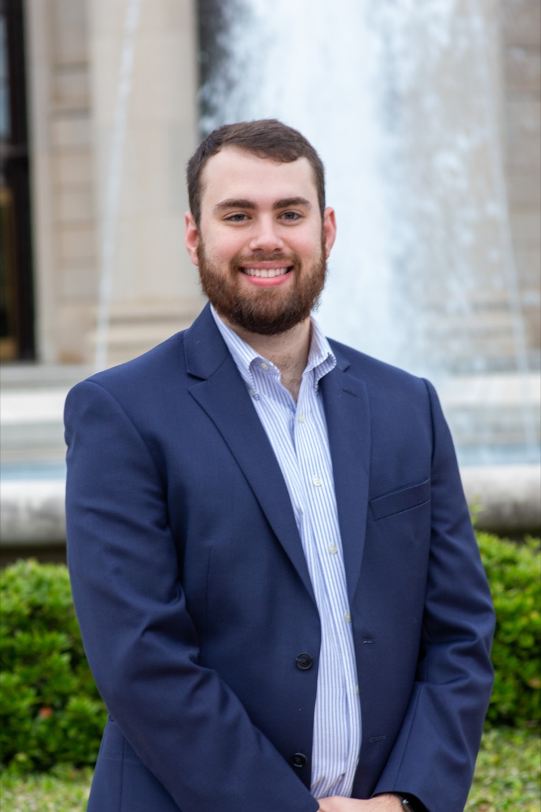

Liam Nester
Liquids Project Engineer, Blue Origin
Working on the Transporter / Transfer Stage for the Lunar Permanence program. Denver, CO.
Currently
I own integration and execution of a liquids subsystem across its full lifecycle — definition, design, build, test, and delivery — for a lunar transfer vehicle. Day to day that means tracking requirements, risk, and cost/schedule performance, and acting as the interface between engineering, program management, and supply chain to keep hardware moving against program milestones.
Before Blue Origin, I spent five years at Aerojet Rocketdyne (an L3Harris company) as a Senior Specialist Project Engineer on research and development solid rocket motor programs, managing cost, schedule, and technical performance across a $15M+ portfolio of control accounts.
About me
I enjoy helping students connect technical ideas to the real systems they see in industry, labs, and everyday life. My background is in aerospace and mechanical engineering, with a focus on practical problem solving, clear communication, and turning complex work into steps that people can understand and act on.
Outside the classroom and workplace, I like staying active, spending time outdoors, traveling, reading about technology and business, and building small tools or dashboards that make information easier to use. I tend to be drawn to anything that combines curiosity, structure, and a good challenge.